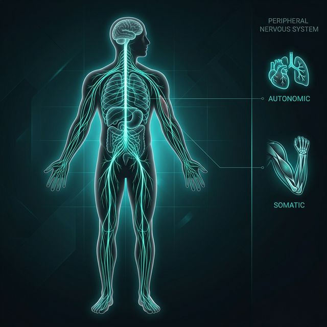

3.1 Afferent ve Efferent Bölümler
31 Çift Spinal Sinir
12 Çift Kranial Sinir
Odağı: Gangliyonlar (Aktarma Noktaları)
Afferent (Duyusal)
Perifer ➔ MSS (Giriş)
Deri, kas, eklem ve iç organlardan gelen uyarıları ve duyusal verileri merkezi işlemciye taşır.
Efferent (Motor)
MSS ➔ Perifer (Çıkış)
Merkezi komutları uç birimlere ileterek kas hareketlerini ve iç organ kontrolünü sağlar.
PSS Korunması
⚠ MSS'nin aksine PSS, kafatası ve omurga ile korunmadığından toksinlere ve yaralanmalara çok daha açıktır.
3.2 Somatik & Otonom Sinir Sistemi
Somatik
İskelet kasları üstünde gönüllü kontrol sağlar. Duyusal veri aktarır.
Otonom (OSS)
Kalp, solunum ve sindirim gibi istemsiz (bilinç dışı) süreçleri yönetir.
Denge (S/P)
Sempatik: "Savaş/Kaç"
Parasempatik: "Dinle/Sindir"
Enterik Sinir Sistemi (İkinci Beyin)
Omurilikten daha fazla nöron içerir ve gastrointestinal fonksiyonları MSS'den bağımsız olarak yönetme yeteneğine sahiptir.